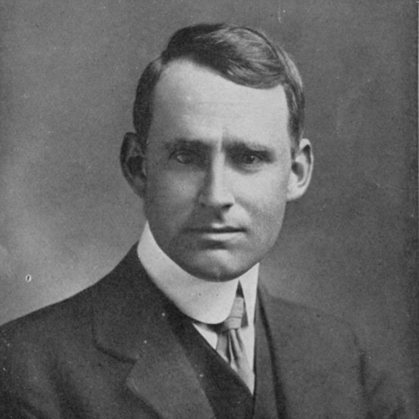
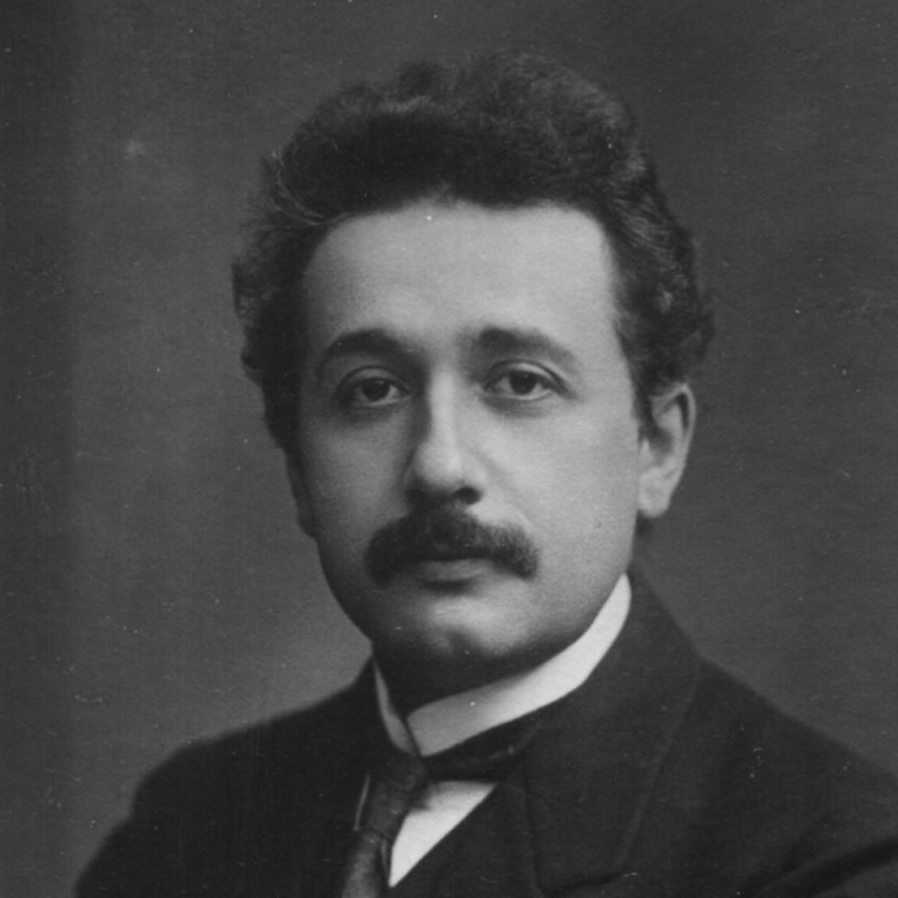
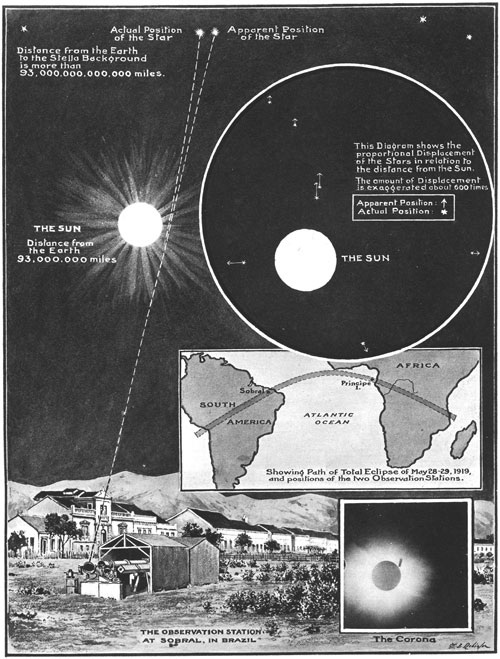
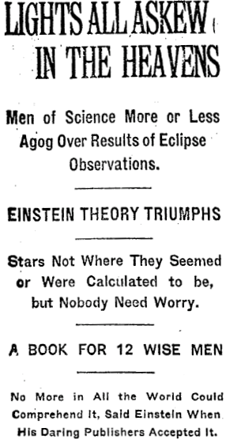

einstein och solförmörkelsen
För jämnt hundra år sedan presenterade en brittisk expedition vad de sett vid en solförmörkelse i Brasilien
och på ön
Príncipe utanför Afrikas västkust. Albert Einstein hade förutspått att ljuset från stjärnorna nära solens
rand skulle
böjas av på grund av solens gravitation. Expeditionens ledare Arthur Stanley Eddington slog fast att så var
fallet – och
över en natt blev Einstein världskändis. Men bakom upptäckten som förändrade vår syn på rummets och tidens
natur döljer
sig en historia om hur Einstein och Eddington kämpade för fred i en tid av krig.
Av Jonas Enander | 10 december 2019
Det här är en utökad version av en artikel som ursprungligen publicerades i Arbetaren den 30 oktober
2019 under namnet När
Einstein fick rätt.
Den 6 november 1919 går Arthur Stanley Eddington – föreståndare för observatoriet i Cambridge och professor
i astronomi
– tillsammans med sina kollegor upp på ett podium i Royal Astronomical Societys hus i London. Drygt hundra
personer
trängs i rummet. De vill höra hur det har gått för en astronomisk expedition som har rest till Brasilien och
ön Príncipe
utanför Afrikas västkust. Har den bekräftat Einsteins nya teori om rummet och tidens natur eller inte?
Expeditionen har observerat en solförmörkelse. Men det var inte solen eller månen som stod i vetenskapligt
fokus.
Astronomerna ville mäta det svaga stjärnljuset som färdades nära solens rand. Einstein hade förutspått att
stjärnljuset
skulle förändra sin bana på grund av solens gravitation. Det var en liten förändring, men om den fanns
skvallrade den om
att Einsteins vision stämde: att gravitation egentligen inte är en kraft, utan beror på att solen omformar
rummet och
tiden runt omkring sig.
En applåd bryter ut när Eddington slår fast att stjärnljuset förändrades precis så mycket som Einstein
förutspått.
Mötesordföranden avslutar sammankomsten med orden: ”Om Einsteins teorier stämmer … så är resultaten en av
det mänskliga
tänkandets största bedrifter.”
Över en natt blir Einstein världskändis. The Times förstasida slår dagen efter presskonferensen fast: ”En
vetenskaplig
revolution – ny teori för universum – Newtons idéer avsatta”. Allt är i gungning: Tsarer, kejsare och
monarker faller
som käglor, den modernistiska konsten förvrider alla perspektiv, och Newtons gravitationsteori – den
klassiska fysikens
kronjuvel – byts ut.
Vetenskap och solidaritet
Men bakom upptäckten som förändrade vår syn på rummet och tidens natur finns ytterligare en historia. För
Eddington
handlade expeditionen inte bara om vetenskap. Den hade ett politiskt syfte. När miljoner människor dog under
nationalismens flagg under första världskriget såg han det som sin uppgift att ställa vetenskapen i fredens
i stället
för i krigets tjänst.
Eddington ville visa att internationell solidaritet mellan forskare i krigförande länder var möjlig. Månens,
solens och
stjärnljusets rörelser på himlen blev en symbol för internationellt samarbete då expeditionen reste över tre
kontinenter
så att en engelsk astronom kunde testa en tysk professors teorier.
När första världskriget bröt ut hamnade brittiska och tyska akademiker i ett ställningskrig mot varandra. En
avgörande
faktor till de försämrade relationerna var ”De 93:s manifest”. I början av kriget massakrerade tyska trupper
lokalbefolkningen i den belgiska staden Leuven. Attacken väckte omfattande kritik från omvärlden. Tyska
forskare skrev
ett manifest till försvar för de tyska soldaterna. Forskarna menade att det var med ”tungt hjärta” som
soldaterna
tvingades beskjuta staden på grund av ”den vildsinta lokalbefolkningens … förrädiska attacker”. 93 kända
forskare, såsom
Planck och Röntgen, skrev under manifestet.
Resultaten blev inte vad de hade hoppats på. I stället för att öka respekten för den tyska vetenskapen och
militären
blev engelska forskare allt mer misstänksamma mot de tyska forskarna. ”Om de tyska trupperna saknar all
heder, hur ska
vi då kunna lita på de tyska forskarnas resultat?”, resonerade akademikerna i England.
Engelska forskare som kommunicerade med tyska sågs med misstänksamhet. Scotland Yard letade efter tyska
agenter bland de
engelska forskarna. Den astronomiska kommunikationscentralen i Kiel – som spred nyheter mellan Europas
astronomer –
stängdes ner. Tidskriften Physikalische Zeitschrift svarade med att publicera listor över fysiker som deltog
i
militärtjänst för att visa att ”även fysiken är ett med faderlandet”. En annan tidskrift tog bort namnen på
engelska
forskare. Framstående tyska fysiker slutade citera engelska resultat och ändrade engelska vetenskapliga
termer till
tyska.
Einstein och Eddington såg bedrövat på hur deras kollegor sjönk allt djupare ned i nationalistiska
tankegångar. Och de
försökte båda agera mot den nationalistiska yran.
Kväkarna och kriget
Eddington hämtade sina pacifistiska tankar från den kristna rörelse han tillhörde: kväkarna. De hade sedan
1600-talet
verkat för fred och internationellt samarbete. Under första världskriget ställdes deras pacifism på sin
spets. Kväkarnas
position gentemot nationalismen var att de som stred i kriget och stöttade militären själva var offer för
kriget. Om de
tyska forskarna skrev kväkarna inför sin brittiska publik att ”de var offer för militarismens och
imperialismens
perversa system. De behöver räddas från detta system, inte klandras för det”.
I stället för att strida grundade kväkarna Friends Ambulance Unit som hjälpte sårade på båda sidor av
skyttegravarna,
och de tog hand om nödställda familjer oavsett härkomst. Verksamheten var farlig. Tre av kväkarnas medlemmar
hamnade i
fängelse, och regeringsföreträdare diskuterade om Treason Act of 1534 skulle användas mot dem.
Eddington riskerade själv fängelse på grund av vapenvägran. Storbritannien hade en mäktig flotta men bara en
liten
stående armé då kriget bröt ut. När dödsrapporterna strömmade in från fronten rekryterade militären
frivilliga som
entusiastiskt anslöt sig till striderna. Men när nästan 7 000 soldater dog varje vecka räckte inte
individuell
krigsentusiasm till.
Värnplikt infördes. 1,2 miljoner män kallades och 750 000 ansökte om undantag. Eddington var en av dem. Han
ville få
status som samvetsvägrare: någon som vägrar militärtjänst av moraliska skäl.
Samvetsvägrarna levde ett farligt liv i England. De internerades och fick utföra meningslöst, hårt arbete.
Pressen och
politiker hängde ut dem som landsförrädare och veklingar. Militären skenavrättade 34 samvetsvägrare. De hade
vägrat
följa order, och skulle skjutas i gryningen. Gevären var laddade och precis när skotten skulle falla
ändrades domen till
tio års straffarbete.

Historiker har spekulerat i huruvida Eddington var homosexuell. Frågan är inte helt irrelevant för
Eddingtons vetenskapliga arbete. På Eddingtons tid var homosexualitet straffbart. År 1895 hade
exempelvis författaren Oscar Wilde dömts till fängelse på grund av sitt samröre med en man.
Om Eddington var homosexuell förstärkte det hans utsatta position. Inte bara hans pacifism var
brottslig under kriget, utan även hans sexuella läggning.
Om Eddington var homosexuell så är det möjligt att han hittade stöd för sin moraliska integritet rörande
pacifism därifrån.
Mannen i Eddingtons liv
Stödet för att Eddington var homosexuell är dock tvetydigt. Eddington gifte sig aldrig. Hans enda
relation med kvinnor var hans mor och syster, som han bodde
tillsammans med, och kollegialt samarbete med de fåtal kvinnor som studerade vid Cambridge.
Han hade en nära manlig vän, Charles Trimble. De sågs ofta ihop; på vandringar, hemma hos varandra,
på resor. En kort period bodde de ihop i London. Universitetet i Cambridge var känt för att ha
homosexuella miljöer.
Det är möjligt att Eddington och Trimble hade en djupare relation än en rent vänskaplig. Om så var
fallet behövde de
hålla den hemlig. Eddington såg till att hans
brev brändes efter hans död, vilket gör det svårt att få en djupare inblick i deras relation.
Källa: Empire of the Stars, Arthur I. Miller, Houghton Mifflin Harcourt, 2005.
Eddington stod dock på sig. Military Service Tribunal förhörde Eddington tre gånger. Det blev en kamp mellan
militären
(som ville skicka Eddington till fronten), universitetet (som ville ge Eddington undantag på grund av hans
vetenskapliga
arbete) och Eddington själv (som ville ha status som samvetsfånge). När Eddington blev befriad från
militärtjänst på
grund av sitt vetenskapliga arbete överklagade han, och förhören fortsatte.
Expeditionen blev en kompromiss mellan alla parter. Regeringen och universitetet slapp den principfaste
pacifisten, och
Eddington fick använda sin vetenskapliga expertis för ett högre syfte.
För Eddington var expeditionen en del av kväkarnas ambition att lindra nationalismens skador med
internationellt
samarbete. För det brittiska imperiet var expeditionen ett statligt uppvisningsnummer. USA, Ryssland och
Europa tävlade
om att visa upp sina logistiska färdigheter. Tillgången till fler kolonier gjorde att astronomerna kunde åka
till allt
mer avlägsna platser. Expedition behövde imperiets resurser för att lyckas och var på så sätt en del i ett
kolonialt
projekt. Men Eddington ville använda dessa resurser för internationell samverkan. Han ville, med historiken
Matthew
Stanleys ord, bekämpa militarismen med ”ekvationer och stjärnkartor.”
Einsteins pacifism
På andra sidan kanalen utkämpade Einstein en liknande kamp. I dag ser vi ofta Einstein som en gammal gubbe
med spretigt
hår som sprider humoristiska visdomar. Under första världskriget var han dock en svältande, illa klädd
medelålders
socialist som arbetade intensivt med att formulera en ny teori för hur gravitation fungerar och att omvända
sina
kollegor till fredens sak.
Han slapp militärtjänst eftersom han var schweizisk medborgare. Redan som tonåring hade han avsagt sig sitt
tyska
medborgarskap för att slippa värnplikt.
Från sin lägenhet i Berlin skrev Einstein brev, pamfletter och upprop mot kriget. Som svar på de 93:s
manifest skrev han
under ”Manifest till européer”, som varnade att fredsvillkoren kunde ge upphov till ett nytt krig. Endast
tre
ytterligare personer vågade skriva under manifestet, eftersom åsikterna var så impopulära. Einstein
publicerade också
artikeln ”Min åsikt om kriget”, som fördömde all nationalism, vilken, enligt Einstein, bara leder till
”djuriskt hat och
massmord”. Till en kollega beskrev han kriget som ”en kollektiv galenskap … som ett dårsjukhus … en
masspsykos” och
spekulerade i om kriget berodde på ”mannens sexuella läggning”. Han åkte även till Schweiz för att delta i
ett rådslag
mot kriget.
Få kollegor lyssnade på Einstein. Tvärtom fick han kritik, vilken ofta hade antisemitiska förtecken. Han såg
hur fler
och fler slöt upp bakom den preussiska militärdiktaturen och han blev mer och mer isolerad.

Den 25 november 1915 presenterade Einstein sina nyfunna ekvationer för hur gravitation fungerar för
den Preussiska Vetenskapsakademin. Ekvationerna uttrycker Einsteins vision om att gravitation inte är en
kraft som verkar mellan objekt, utan en förändring av rummets och tidens egenskaper.
Vad Einsteins skrev ner i sin teori var den exakta formeln för hur materia förändrar rum och tid runt
omkring sig,
och hur denna förändring påverkar hur objekt rör sig. Så rör sig exempelvis månen runt jorden för att
jorden har förändrat
tidens gång runt omkring sig, snarare än att det är en kraft som verkar mellan jorden och månen.
Einsteins ekvation är väldigt komplexa. Idag är enbart ett fåtal lösningar till ekvationerna kända.
För
realistiska fall krävs omfattande datorberäkningar.
Förutsägelserna från Einsteins ekvationer har testats med stor precision i solsystemet, och ekvationerna
är en av grundpelarna i studiet av universums utveckling.
Polisen i Berlin blev däremot intresserad av den pacifistiske professorn. Myndigheterna förde upp honom som
nummer 9 av
31 på listan över potentiella subversiva pacifister och socialister. Mot slutet av kriget drog polisen in
Einsteins
möjlighet att resa fritt in och ut ur landet.
Mot södra hemisfären
När Eddington fick klartecken för att genomföra expeditionen började planeringen. Månens skugga skulle svepa
över
Amazonas, Atlanten och Kongos djungel. Den optimala observationsplatsen skulle identifieras, fartyg bokas,
manskap
kallas, lokala företrädare kontaktas. Det var ett omfattande logistiskt arbete. Och kriget pågick
fortfarande: Tyska
ubåtar sänkte brittiska fraktfartyg och det var oklart om det ens gick att åka till de utvalda platserna.
Men kriget tog slut. Den 9 november 1918 skrev Einstein i sina föreläsningsanteckningar att hans lektion var
”inställd
på grund av revolution.” Tyska soldater hade gjort uppror, hundratusentals människor strejkade över hela
Tyskland och
den gamla ordningen kollapsade.
Einstein stödde upproret helhjärtat. ”Den stora händelsen har skett!” skrev han till sin syster. ”Den
största offentliga
erfarenhet som är tänkbar … att jag skulle få uppleva detta!” Hans dröm gick, åtminstone för en kort stund,
i
uppfyllelse.
Den tyska militärens kollaps avslutade första världskriget. Expeditionen skulle bli av. Eddington insåg att
det inte
räckte med expeditionens vetenskapliga sida. Det krävdes också folkbildning för att både forskare och
allmänhet skulle
förstå vikten av expeditionens resultat. Han skrev därför en serie populärvetenskapliga artiklar och höll
föredrag för
att informera om Einsteins teori. Problemet var att teorin var svår att förstå: den krävde en ny typ av
matematik – den
icke-euklidiska geometrin – som få matematiker, än färre fysiker eller astronomer och knappt ingen från
allmänheten –
kände till. Eddington använde därför en hel arsenal av litterära referenser – som Alice i Underlandet och
Gullivers
resor – för att förklara den nya teorin.
Det vetenskapliga målet med expeditionen var att mäta hur mycket stjärnljuset som färdas nära solens rand
böjs av på
grund av solens gravitation. Stjärnornas position förskjuts på himlen när solen passerar nära dem, ett
fenomen som bara
går att studera vid en solförmörkelse. Einstein hade angett en formel för den exakta storleken på denna
förskjutning,
vilket motsvarade att stjärnornas position försköts en sextiondels millimeter på de fotografiska plåtarna.
Genom att
jämföra fotografierna av stjärnorna tagna under solförmörkelsen med fotografier tagna en stjärnklar natt
kunde Eddington
se hur mycket stjärnornas position hade förändrats på grund av solens gravitation.

Illustration i London News från den 22 November 1919. Illustrationen visar solförmörkelsen i Brasilien.
Längst ner till vänster
syns det tillfälliga observatorium som brasilianska och engelska astronomer konstruerade.
Den 8 mars 1919 avgick expeditionen från Liverpool. Skeppet RMS Anselm tog forskarna till Madeira. Kriget
var
fortfarande närvarande: i hamnen stack masterna från skepp som hade sänkts av tyska ubåtar upp ur vattnet.
På Madeira delade gruppen på sig. En grupp åkte till Sobral i Brasilien, och den andra, som Eddington ledde,
åkte vidare
till Príncipe. Ön var en portugisisk koloni som producerade kakao med hjälp av slavar från Angola. Nu var
öns invånare
fria, men den koloniala strukturen gjorde sig fortfarande gällande: ett par portugisiska familjer styrde ön
samtidigt
som de befriade slavarna arbetade vid odlingarna.
Kakaoarbetarna bar Eddingtons utrustning genom den svårtillgängliga terrängen till en avlägsen kulle. Där
byggde de ett
provisoriskt observatorium. Dagen innan solförmörkelsen bröt ett oväder ut och det regnade oavbrutet. Två
års
förberedelser såg ut att gå om intet. Hur mycket Eddington än hade planerat expeditionen in i minsta detalj
kunde han
inte rå på vädret.
Nästföljande dag, den 29 maj, var himlen fylld av astronomernas största skräck: moln. Månen gled in över
solen klockan
14.13 och förvandlade dag till natt i 302 sekunder. Molntäcket skingrade sig tillräckligt mycket för att
Eddington
skulle kunna fotografera stjärnorna nära solen. Till sina kollegor telegraferade han: ”Genom moln,
hoppfull”.
Observationerna lyckades men det krävdes en noggrann analys av de fotografiska plåtarna för att fastställa
exakt vad
expeditionen hade mätt. Analysen tog flera månader. Men när de berättade om sina resultat spred sig nyheten
om den
vetenskapliga omvälvningen direkt.
Expeditionens konsekvenser
Det var Eddington som gjorde Einstein till en världskändis. Han hade förberett allmänheten med sina
populärvetenskapliga
artiklar och böcker. Einstein åkte ut på världsturné och berättade om sina teorier. Allmänheten älskade
honom. Hans
internationella och fredliga budskap gick hem hos den krigströtta allmänheten. Eftersom han hade varit
pacifist under
hela kriget hade han inte heller blod på sina händer.

Tidningsrubrikerna dagen efter att Eddington berättade att expeditionen hade bekräftat Einsteins teori.
Einsteins ekvationer är fortfarande, 100 år efter att han skrev ned den, oöverträffade. Ur hans teori har en
rad
upptäckter flödat: om svarta hål, universums expansion och även något så praktiskt som GPS-systemet
(Einsteins
ekvationer anger hur satelliternas klockor i rymden tickar snabbare än klockorna på jorden, och utan att
korrigera för
den skillnaden skulle GPS-systemets precision kollapsa inom ett par minuter).
Sommaren 1921 reste Einstein till England. Längst inne i Royal Astronomical Societys hus träffade han
Eddington. De hade
skrivit några artiga brev till varandra där de beklagade att de inte kunde den andres språk tillräckligt
väl. Nu skakade
de hand för första gången: två udda fåglar som trots hån och attacker hade lagt grunden för en revolution
inom fysiken
som skulle förändra vår syn på rummets, tidens och universums egenskaper för alltid.
Skänk dem en tanke nästa gång du använder Google Maps och GPS-systemet. Du kommer hitta rätt tack vare den
principfasta
hållningen hos en vapenvägrande kväkare och en pacifistisk socialist.
Källor:
Einstein’s War. How Relativity Triumphed Amid the Vicious Nationalism of World War I,
Matthew Stanley, Viking, Penguin Books, 2019
No Shadow of a Doubt. The 1919 Eclipse That Confirmed Einstein’s Theory of Relativity,
Daniel Kennefick, Princeton University Press, 2019
Rymdskrift - kosmologi, vetenskapshistoria och naturfilosofi.
Jag som skriver heter Jonas Enander och är doktor i fysik.
Du kan kontakta mig på jonas@rymdskrift.se eller följa mig på
Twitter.